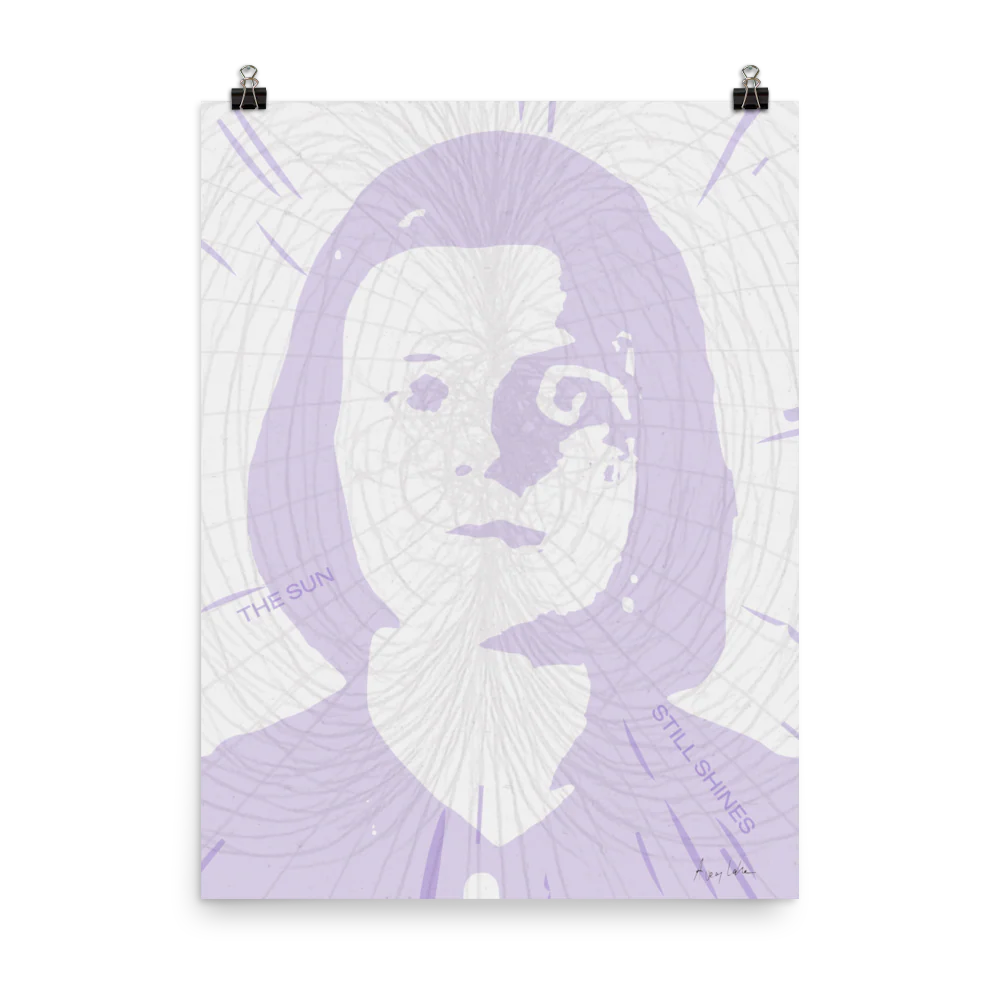
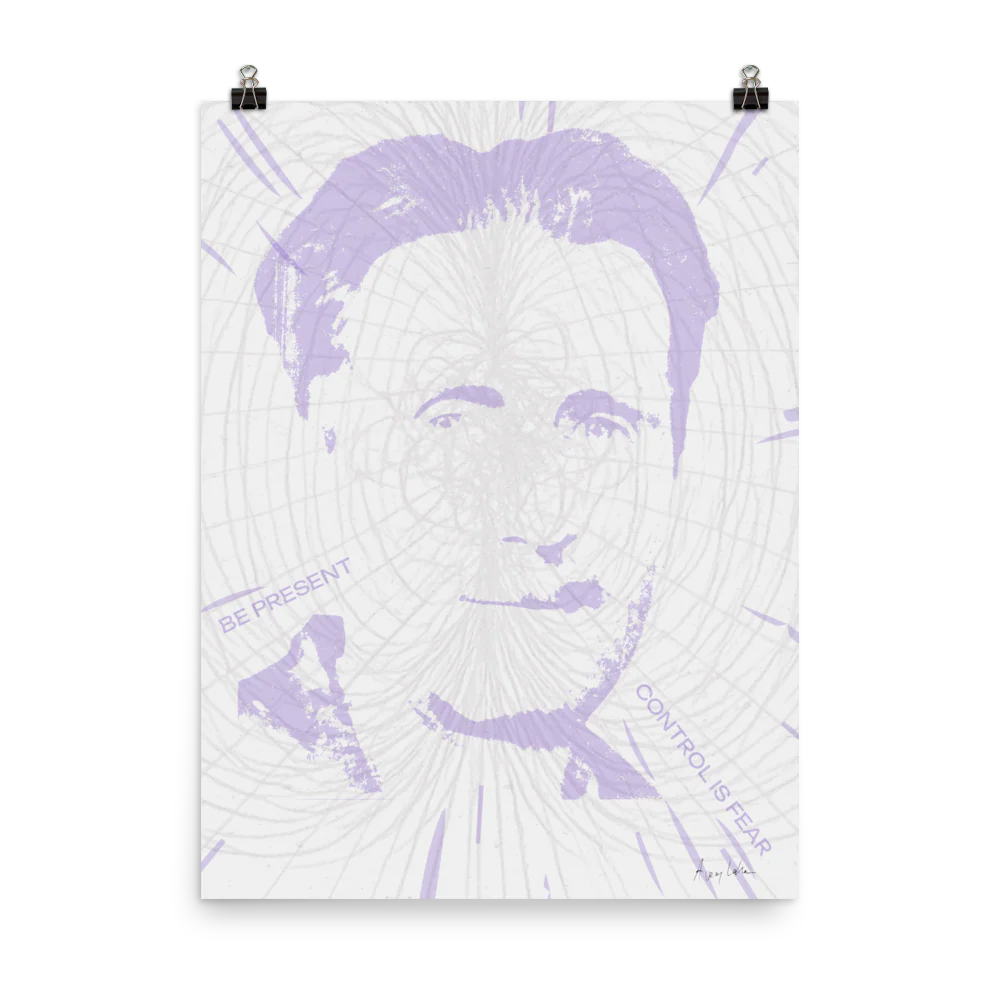
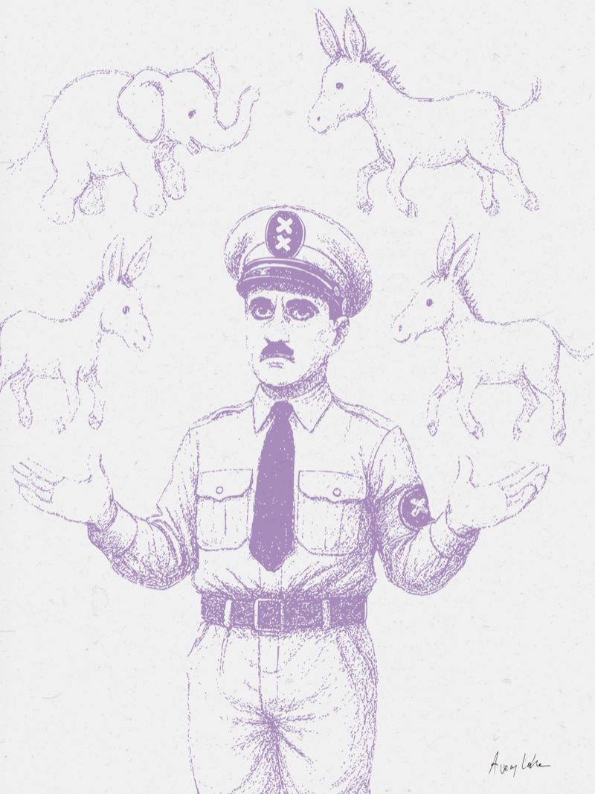

In these disoriented times,
three new saints have been canonized.
They are on their way to help you,
with their timeless message.

"The sun still shines"
St. Sophie Scholl
She was executed by the Nazis at 21 for distributing leaflets. Her quiet defiance became an inspiration.

"Be present. Control is fear"
St. George Orwell
He wrote 1984 to expose the architecture of control. His words seem more important today than ever.

Final speech from The Great Dictator
St. Charlie Chaplin
An artist who built worlds without words. In this moment, he breaks his silence to confront tyranny.
The triptych was complete.
The saints had spoken.
But then...
an unexpected figure appeared.
"We want you
to become a Saint"
The message sounded plausible. Even kind.
The Seducer wanted to be the center.
To make a mockery of the Saints.
To clone them into clowns.

A theatrical temptation.
The Saints won't become clowns.
The Saints were free.
The Seducer has a price.
You don't need to become a saint.
You already are one.
Remember?
What will you resist?
1921 — 1943
Member of the White Rose resistance group in Munich. She distributed leaflets denouncing the Nazi regime. Arrested, tried, and executed at age 21. Her last words: "Die Sonne scheint noch" — The sun still shines.
1903 — 1950
Born Eric Arthur Blair. Author of Nineteen Eighty-Four and Animal Farm. Fought fascism in the Spanish Civil War. His writing exposed the architecture of surveillance, propaganda, and control. "In a time of deceit, telling the truth is a revolutionary act."
1889 — 1977
An artist who built worlds without words. In The Great Dictator (1940), he broke his silence. His final speech is a plea for humanity, delivered in character as a Jewish barber mistaken for the dictator. It remains one of the most powerful monologues in cinema.
Temporary Trick
We were tempted to add more to the triptych. The message of the Seducer sounded plausible. Even kind. But the triptych was already complete. The Seducer wanted to be the center, to clone the Saints into clowns, into a theatrical temptation. A spectacle that had to be stopped.
This is a single, unique, signed edition. It comes with one condition: to complete the piece, you must destroy it. The Saints are free. The Seducer asks for a high price.